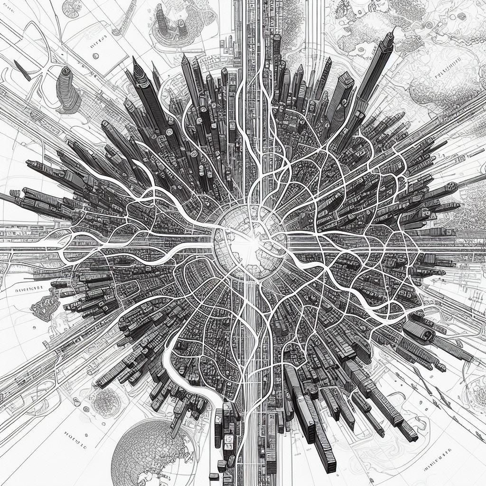

The Network
Let us rally around a common cause as opposed to a
common enemy. Freedom is not only about not being
bound by the current monstrous systems. Freedom is
also measured by the ability to do what you want
without repercussions. We might be on an individual
level removing ourselves from many of the unnecessary
taxes upon our lives, but there are still many paths
that are blocked by the current system. It should be
easy and available for anyone to enter into a
profession they desire, or to create an entirely new
profession for themselves without unnecessary bloated
restrictions, allowing for the free market to deliver
goods and services based upon consumer desires. There
is a way forward, and we are the ones to create it.
Why do we not have another option when it comes to where we get our food, goods, and services? Why is there not a huge supply of grey market goods, with countless supply lines providing a robust and healthy market for those who wish to get their needs met through non-government channels? Other countries have this in varying degrees, but there has to be a reason why the "United States" is unable to provide this service to its people.
The major reason why more farmers don’t work outside of the government system is fear. They have a healthy fear that they will be found and punished if they go against the law. Our mission is to make it possible for farmers, agorists, and anyone seeking to free themselves from taxes or regulations to sell without fear of government persecution.
There is a common perception that in order to be “
doing agorism”, one has to be disconnected from social
media and other forms of communication. We recognize the
value of privacy and support those who wish to remain disconnected,
but there is also great value in having a
public-interfacing faction of the network aimed at growing
and upgrading the network of individuals who recognize the
true nature of the State and all who seek to restrict the
freedom to peacefully conduct oneself with other consenting
individuals, the right to freedom of association, the right
of self-defense, and the right to restitution for damages done
to the person or property of the individual, unless the damage
was inflicted in self-defense.
There will have to be a group of people who are putting
themselves on the line in order to grow the network. We are
not trying to make a network that is insular and inaccessible
to outsiders. We need to create something that is both safe
and widespread, as the survival of the network relies on its
dispersed nature, not on one branch becoming large and
noticeable and thus susceptible to being torn down. This
benefits the market and every individual in it as it is
imperative to have multiple sources of goods and services to
create resilient, decentralized, and redundant networks.
We are focusing on growing the wealth of everyone we can
through agorism.
Agorism
is the practice of circumventing the state through
counter-economics.
Agorism is the practice of circumventing the state through counter-economics.
Right now, there is no steady supply of goods available that don’t fund the tax system. This means that most farms and companies get licenses and follow regulations that cost them and their customers money in taxes that do not support them.
CaravAnarchy
An example of a nomadic agorist
network is Camp CaravAnarchy,
a traveling nomadic agorist caravan that focuses on
making business and social networks with people seeking
to bring about a more free way of living to themselves
and others.
Chew’s Wisely Ice Cream and Pizza
Our “Ice Cream Philosophy”
is that we strive to bring to market the finest quality
Homemade Ice Cream products, sourcing ingredients from
as many agorist sources as possible, sourcing only the
highest quality ingredients. If you want access
to the best Ice Cream this reality has to offer, you
have to go through the agorist market.
We are creating a perpetual free market that will provide
a safe space for people to buy and sell agorist goods
without fear of the government. We will travel from town
to town, setting up in BLM land, staying for a month or
more at a time, and from time to time venture to private
campgrounds for freedom-respecting festivals.
We don’t need to convince more people that this way of
living is viable. There are already enough people who
have seen the vision of how a free and voluntary society
would work - if every one of them started living their
life in this new way, we would make a big enough impact
to gain the attention of the rest of the world.
This is not another intentional community. This is a
strategy towards creating freedom for all that can be
adopted by every person immediately. There is no central
location or leader that can be taken down. like an idea,
it can only spread.
Roadmap
The following is an overview of this website with a link to each section.
Intro to The Network

Intro

This section contains information on the avenues that lead into into the more protected areas of the network.
Intro

You do not need to try to create the next world from scratch from your current location or local community. Instead of trying to influence a change in the lifestyle of those still resistant to the idea of protected free communities, you can combine your efforts with those who share your intentions and who already see the vision of what is possible in this lifetime.
You could spend a lifetime trying to persuade others to see the vision themselves and then to become active in changing their own lives. But there is a quicker way to achieve freedom. This is called agorism, and this website is a guide to creating this in your own life.
Though some people have the drive and desire to be at the forefront of a dispersed community that values and protects their freedom to peacefully interact and transact without repercussions, we can’t wait for those people to come out of the woodwork to begin creating a new free way of living. Word of mouth takes time to propagate. Most people can’t be expected to change when there isn’t an obvious and well-worn path towards a new way of living.
It will require a relatively small dispersed group of people who not only are interested in a new world but who are prepared to take actions in their lives to create an alternate ecosystem for each other, replacing streams of resources from the exploitative system with the networked goods and services of protected free markets. This does not mean an end to the importation and production of goods, but simply to better sources of them. Sources that do not, for example, fund the war machine, enslavement, and mass-incarceration of human beings.
Until this alternative network is more ubiquitous, it will be hard for individuals to abandon their current lifestyle and transfer all their income and expenditures over to these free and ethical sources. There are already people spread out across the country and world who are prepared to make that shift in a way that creates more opportunities for everyone seeking a free way of life.
The larger community is made up of individuals who have the skills and knowledge necessary to support one another. What support does the individual need from a network? Every good or service you spend money on can be re-sourced. Medical care, insurance, gasoline, jobs, and education to name a few. Everything that drives the world today can be provided in a better way by the community.

We do not need to escape this world. We have everything we need here to create the next phase of existence. This is the world that, in time, becomes the ideal world for each individual. How can each person have their own ideal coexisting with every other person’s ideal, simultaneously? The answer is voluntary pluralism.
To get a more concise and potent result, we are more concise with our parameters. We are not judging those who do not follow these parameters, but we are making a distinction within our own decisions to do business with others who are actively creating more freedom for others instead of creating only a space for themselves to temporarily reduce their own oppression while doing little to manifest or support protected free markets.
We do not want to spend our lives working for other people’s goals while doing nothing or very little toward what we are in this realm to achieve, which has nothing to do with slaving away for money.
This is a guide to the establishment of a society that is independent, interconnected, and free from coercion. Today, we have everything we need to circumvent the state entirely. Communities small and large are already flourishing all around the world, and what is lacking in the common lore is a larger and more liberating story we can all manifest into reality.
The next sections will address the following:
- People don’t see an option
- We are creating an option
- You can create an option
Understanding what is possible will lead to a more extensive awareness and empowered utilization of these communities, both with each other and by those still more entrenched in the slave society.

Igniting the Engine
Our model does not require capital to run. It is a framework that can be applied to help others better utilize their time and resources toward safeguarding freedom. What we need is not donations but people on the ground, explaining what is possible and available to us right now and also creating the next level of possibilities. This network will help those seeking protected free markets to transition from a state of surviving to one of thriving.
Eventually, the network will provide a place for everyone, and, if they see it necessary, a path away from everything about their current way of living. Whether they want to learn a trade in an Association, start their own Association or profession, or just live free on land arbitrated by no ruler, there are countless reasons why choosing freedom for yourself is an obvious and beneficial path. Life can be easier, more profitable and there is more time in the day when the fruits of your productive energy aren’t being siphoned away into the wasteful and unethical games of politicians and well-meaning voters. Similarly, there is more incentive to work when you know your labor is going towards something that will support you more and more as time goes on. We will share more on that in the next chapter.
We are not creating the network. The network exists already, though small. The full potential of the network will manifest when it is given the right push and intention. Instead, you can see us as network support. We are devoting our entire lives and livelihoods to creating a stronger bond between those who are already constituting the network and encouraging a larger vision for how we can take on the needs of our dispersed freedom-supporting community members and markets in every way.
A peaceful society is possible based on a truly simple concept: that no man should aggress upon another or their property as an extension of their existence in this realm. All associations between individuals or groups must be voluntary and consensual. No person or group of persons should be given freedom to aggress. Justice comes from restitution, so victims must be free to exact restitution from their aggressor(s). Individuals who are the targets of aggression should not be prevented from the exercise of defensive force in opposition. We recognise this as the Non-Aggression Principle (NAP) paired with the Self-Defense Principle (SDP) and the Principle of Restitution (PoR). We can pave the way for an organic and voluntary society based on these precepts alone, but to do that requires more than just encouraging each person to spread a culture of voluntaryism in their current immediate surroundings. Even small communities of voluntaryists can not create a voluntaryist society in the larger world unless they share a larger vision for freedom beyond their own domain and take action to join and help create the network of protected free markets.
When you make your voluntary groupings, make sure to look at what is created.Are you producing more freedom for others beyond your circle? This is not an altruistic approach, but promotes a realistic understanding of how each smaller group relies upon an interconnected network in order to survive. Not only does every group interact with the larger society in some large or small ways which affect their life and wellbeing outside of their control, but any one group cannot get all of their needs met by their individual members. You need to import products and services. To do this, you must expand your inner network to collaborate with others in your broader community who share in your desire to create safe and thriving free markets and establish protected and trusted trade and social networks.
We also understand that the stress of high mortgages and “taxes” (government extortion) makes wealth accumulation more difficult and that is why we are creating the infrastructure (the bounty board, helping to meet the needs of our network of individuals intent on protecting and supporting a free way of life) to create affordable housing and jobs that pay more while not extorting taxes from the people involved. Nobody will be turned away for lack of funds. Instead, we will select our allegiances based on the goal and vision of each individual.
Every organization or organism has parameters it is working to achieve and maintain. Another similarity between these two is that like an organism, the way an organization is formed and the mechanisms that bring it to life will determine the outcome it achieves in its environment.
This is why we have the engine. We are creating a bulletproof mechanism and strategy, so that even if large parts of it are destroyed, all it needs is one hearth, aka one wing of the network, to light up in some distant land and our engine is going again.

We do not need any one leg of the engine to survive continuously for the engine to roll on. Any single hearth can turn its engine on and off, but there will always be more engines firing and producing the change we need to move past the current binds we live under and into a realm of voluntaryism for all.
When we create certain additional criteria for our interactions in addition to the NAP (which already underlies all of our interactions) we assure that our interactions will make the largest impact possible in the community that supports us.
We need a community to support us in these ways: security, backups, community, etc. The everyday society we have come to know is not providing for us in the ways we need, and we are being led to erroneously think ourselves powerless over our current state of mass-human-enslavement.
Having a protected community requires vigilance, decentralization, sound principles, and a plurality of voluntary strategies aimed at meeting needs.
The worst evil is people still believing and perpetuating the lie that they have to be controlled by the government. Your way of living should be an act of rebellion that helps make people’s choice for freedom a no-brainer.
Our idea is strengthened by its many unique attributes. Unlike a proposal that requires massive funding to get off the ground, this idea is aimed at people who are already trying to make a living who hopefully already have resources invested in themselves and could benefit from shifting their business towards a tax-free network that will help them out. The success of this network is not tied to any individual’s success. We (Caravanarchy) are simply network support, and others can replace our role should some tragedy befall our specific wing of support. What we are describing is a lifestyle and resource-allocation strategy. The more people get empowered by it, the stronger it gets and the more everyone involved benefits.
We are creating this guidebook and an online presence that will do much more to help those specific individuals who want to make a change and commit to these endeavors in a way that makes a difference. Join us in creating a world immune from institutionalized tyranny!
We are not the network iself, nor does it need us as individuals to materialize it. However, our caravan fills an important role.
A majority of the people we meet are interested in settling down on property and growing their own food. The logic in this endeavor is infinitely sound. However, one of the biggest struggles for farmers who have the desire to progress beyond their own sustenance and to make money doing what they love is finding the market for the goods and services they wish to provide - both outside and inside their farmstead.
This is a very desirable endeavor as opposed to making money from something unrelated to your efforts to exist in a healthy and positive way. It is hard to find new customers when farms are often hours from major cities, and the money they would have to spend on gas to drive and sell their goods can cut a sizable chunk out of their profits, not to mention taking time away from the tasks they must complete to keep the farm running.
As full-time nomads, the money we spend on gas is already subsidized by the sheer amount of goods we are bringing from one place to another. We make sure that every time we move, we are making money simply by moving: for example, we provide rideshare and package delivery to supplement our travels if there is a questionable business opportunity on the other end.
Currently, there is craigslist which provides basic search services for those wanting to buy or sell items. The bounty board is more complex and offers away for an individual to craft their own "job" out of providing for other peoples weekly needs. Anyone who joins the network will be encouraged to post on the bounty board detailed descriptions of what goods and services they provide for themselves and purchase every week. These will be posted semi anonymously on a map. From there, someone who is looking to start a new delivery route will be able to construct their delivery system based on the needs of those in their chosen area.
For example, if there were 10 people who would buy one dozen eggs per week, but currently have to do it at the grocery store, someone with a vehicle would be enabled to find a producer of eggs in the area who was able to produce 10 dozen eggs per week. If that person wasn’t already existent. They would be egg deliverer could go to anyone and show them the demand, even gaining pre-orders from the people involved, and invest the small amount of money to get that delivery system up and running. People will be creating their own schedules, and negative experiences will be able to be reported and dealt with seriously.
When we go to an area, we stay there for a month. People in our caravan network with others in the town and raise awareness of our marketplace. Staying a month ensures that someone just introduced to agorism will have time to gain familiarity with our presence and is more likely to find the time to come to our market, which can be hosted constantly if those in the caravan desire to host it full time.
We are often told that in order to create the change we want to
see in the world, we have to start by changing ourselves. The
reasoning goes that if we start having more positive interactions,
those around us will also be empowered to have positive
interactions. I think this is a good idea, but that it essentially
disempowers those who adhere to it.
Most people I meet are already advanced enough spiritually and
mentally that they know what it is to be a good person and can
recognize a good interaction when they see it. We do not need
to become spiritual gurus in order for the world to be affected
by our goodness/light.
With the network (which we are not creating but are helping grow)
our reasoning is similar, but differs in a very important way.
We believe that you understand the non agression principle, and
it’s implications, including the self-defense principal, once
introduced to it, you already have the necessary development to
empower those around you.
We also believe that the infrastructure is not yet in place that
would create a simple and effortless transition for you and those
around you into a life adhering to this principle.
Therefore, we have created this framework in order to inspire you
and those you communicate with. Hopefully, it will help you
understand a new way of doing things. This plan will require a
fair amount of people changing their tune in order to actualize
the vision, but in reality many are already doing what it takes
to make this possible.
To say that you alone can make the change needed is unrealistic.
Perhaps, if you already were surrounded by only empowered and
flexible voluntarist, who were already spending their entire
lives, trying to create an agorist counter economy, just being
armed with this information could be all it took to mobilize
yourself and those around you to start participating in a
network that would change your lives and the entire world
eventually.
However, most people exist within webs with others who do not
see the same potential outcome of freedom for all. And who,
usually out of fear, are not willing to make a big change to
their life to help this reality come into existence.
If you are in this situation, I do not encourage you to try to
change the minds of those who do not want to hear it. Instead,
you should use this network to find those who are already on
the same path that you are.
This is a guide on the scope of what is possible in the next
1-10 years. This is not a guide on how to create a voluntaryist
society starting where you are with only the resources present
in your community. Spreading freedom (and a voluntaryist society)
requires that you first take care of your personal need for
autonomy and freedom. It also will eventually require intentional
choices aimed at starving and bleeding the enemy (the State)
while supporting and bolstering your allies and friends in freedom.
The first step is to ascertain whether relocation or nomadic
living might be the most lucrative way to achieve your short-term
goals while transitioning out of the non-agorist system
(
What is Agorism?). There will be properties available
for short or long-term living rent and work-free while you detox
from society or re-evaluate your goals. These will be voluntary
properties and will take shape depending on the unanimous consent
of the people who live there.
Do you believe in a society where all interactions are
voluntary and consensual?
This book presents a path for every person towards a life that is more
aligned with the expression of their true potential and desires. This
book also serves as an introduction to a network that already exists
in its formative levels and aims to soon provide clean, freedom-oriented
alternatives for every need a person may have.
This guide is to help you figure out your next move. It is full of
plans of action and resources for collaboration. In every chapter,
strategies are provided that can be used to meet every need. The
bounty board and social boards connect individuals with available
resources. Without the leeching and constraint of the state,
everyone can live a free and fulfilling life they can be proud of.
This requires discipline, intention, and a willingness to adapt
one's lifestyle toward bringing about a more free world for
themselves and others. It will also require our continued vigilance
in keeping our markets safe from aggressors.
We are cultivating a world of decentralized and interconnected
voluntary relationships between equals; because that is the only
possible just future. There is no free world in which force or
coercion can persist unchecked, much less become
institutionalized. Because of the concise nature of our plan,
the outcome of this is going to be something more abundant than
seems possible in these bleak times.
Those who participate will enjoy the bounty once-stolen from them
by the State, while enjoying a market constantly on the lookout
for aggressors. They will enjoy a higher standard of living not only concerning material wealth, but also in that of social wealth and resilience gained through intentional networking. Participation can be done on many levels, both overtly and covertly.
Part of our work
is to make leaving the old and destructive ways smart, easy, fun, and
cool.
In the current paradigm, we haven’t been able to take a positive approach because, with the options given, there are no viable paths forward in which we are still maintaining our morals. Because most problems arise from the systemic problems associated with government control, we have an answer or better way of framing for all questions and issues brought up by the past and current society.
You do not need to leave the city to become an agorist. The goal is to disconnect your income, housing, and expenditures from the beast. The Network aims to provide you with truly free-market alternatives to the taxed and regulated markets.
When you are clear with your boundaries and vision, you can create an intentional network that will free humanity forever. With your intention in mind, cultivate the network links that lead you toward your goal rather than relying on organic growth alone. It is about changing who you support - and offering incentives for people to change with whom they do business with.
We need to get the word out and not bend to fear! We can create the future we want, right now!
Other Goals:
- Help people talk about and introduce others to Voluntaryism
- Offer excitement and perspective with our real-world RPG
- Connect people to resources and info in the alternate trading economy
- Bolster supply and demand
They say that a better future starts with an internal change -
that you start with yourself to make the world a better place.
I don’t think one person’s actions can be enough to
create the change needed. Let's all expand our ideas of what's
possible.
This entire endeavor is focused on real solutions and pulling
anarchists out of the current paradigm and placing them in the
situations they need, regardless of the resources or money they
have amassed as of yet in the zombie system. It’s not too
hard to opt-out if you have enough support. And this network is
providing the extra support needed by those who don’t
already have a network supporting them.
Get Involved Today
For those who want to get involved but don’t know
how that would look, the caravan is the most immediate
form of aid.
We have 5 vehicles and the mobile camping infrastructure
setup available to where we can share the infrastructure
to support a loose, slow-moving caravan with the aim of
ending slavery today through education, agorism and 1
encouraging the connection between new and already made
alternative networks.
We aim to engage in agorist business and networking in
the towns and cities we travel through. Presently,
Caravanarchy funds itself through donations and through
multiple agorist business options we are equipped to
employ. The aim is to create a marketplace every time
we get to a new location, at which people in the nearby
area can conduct their commerce in a safe and flourishing
space.